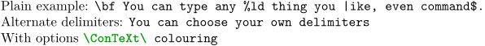
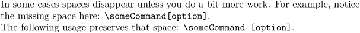
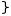

Contents
Summary
The command
\type
typesets verbatim TeX code
Settings
Settings angles
Description
Verbatim text, typeset in typewriter font.
In a caption (and probably other places), \type can cause errors if it contains active characters (| for example). You can use
\type{...}\type{|}\type{...}as a workaround, since the first character is not expanded.
Examples
Example 1
-
Plain example: \type{\bf You can type any %ld thing you |ike, even command$.} Alternate delimiters: \type-You can choose your own delimiters- With options \type[option=TEX]{\ConTeXt\ colouring}
- 
Preserving some spaces needs more work
-
In some cases spaces disappear unless you do a bit more work. For example, notice the missing space here: \type{\someCommand [option]}. The following usage preserves that space: \type[compact=last]{\someCommand [option]}.
- 
Why is there a angle variant ?
-
% you can not type } with \type{}} % because the first closing } ... closes the argument % you finally have a } alone which makes compilation unsuccessful. % but you can type } with \type<<}>>
- 